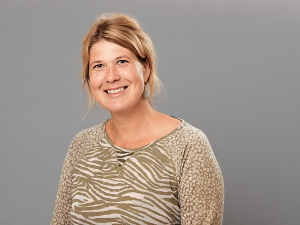

Areas of Expertise
- Cell biology of soft tissue development, regeneration and disease (muscle, cardiovascular)
- Cell Signaling and Mechanobiology
- Microtissue engineering
Research Projects
- Immune-endothelial interphases (IMMENs)
- Hematopoietic stem cell engineering (Making blood)
- Mechanobiology of hematopoietic stem cell niches and the endothelium
- Deciphering mechanisms of soft tissue development and regeneration
- Nanoparticle interactions with biological barriers
- Deciphering mechanisms of tumor-endothelial crosstalk
Special Methodologies & Techniques
- Microtissue engineering and biomaterials
- Organ on Chips, flow and perfusion chambers, micropatterning, functionalized materials
- Cell and molecular biology
- Optogenetic tools and synthetic biology tools
- Zebrafish to study soft tissue development (muscle, cardiovascular)
- Computational simulations of mechanochemical regulation of tissue architecture
Major Funding & International Networks
- Sigrid Juselius Foundation
- European Research Council and European Commission (H2024, Marie Curie Training Network)
- Research Council of Finland
- Inflames
- Turku Bioscience
- Materials-driven regeneration (https://mdrresearch.nl)
- Institute for complex molecular systems (https://www.tue.nl/en/research/institutes/institute-for-complexmolecular-systems)
Selected Publications
- An integrated 2D framework for quantifying cellular mechanics reveals the impact of juxtacrine Notch signalling on directed collective migration of endothelial cells. BMC Biol. 2025 DOI: 10.1186/s12915-025-02396-4
- Receptor stoichiometry predicts artery-typical vulnerability to altered Notch signaling during smooth muscle differentiation. DOI: 10.1101/2025.05.05.652186
- Mechanosensitive interactions between Jag1 and Myo1C control Jag1 trafficking in endothelial cells. iScence. 2025 DOI: 10.1016/j.isci.2025.113879
- 2.5D Model for Ex Vivo Mechanical Characterization of Sprouting Angiogenesis in Living Tissue. J Vis Exp. 2025. DOI: 10.3791/67641
- Engineered patterns of Notch ligands Jag1 and Dll4 elicit differential spatial control of endothelial sprouting. iScience 2022. DOI: 10.1016/j.isci.2022.104306
✏️ Suggest changes to this profile
Last updated: